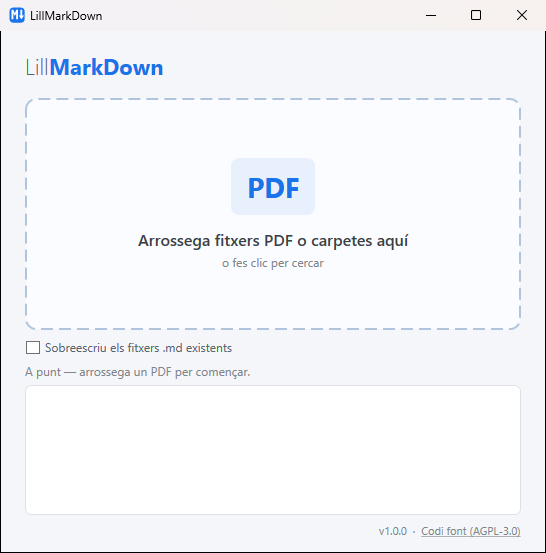

De PDF a Markdown, arrossegant.
LillMarkDown és una aplicació per a Windows, gratuïta i de codi obert, que converteix fitxers PDF en Markdown net: amb títols, paràgrafs i llistes, i sense capçaleres ni números de pàgina.

Com funciona
Tres passos i cap configuració.
Arrossega
Deixa anar un o més PDFs a la finestra, o una carpeta sencera (també converteix les subcarpetes). També pots fer clic per triar-los.
Converteix
Llegeix la mida i el gruix de la lletra de cada línia per saber què és un títol, un paràgraf o una llista.
Fet
Al costat de cada PDF apareix un fitxer
.mdamb el mateix nom. No sobreescriu res tret que ho demanis.
Abans i després
El text del PDF, ordenat i amb estructura.
Aquest document recull les activitats principals de l'any i els resultats obtinguts en cadascuna de les àrees de treball.
- Reduir el temps de resposta
- Ampliar el servei a tres centres nous
# Memòria anual Aquest document recull les activitats principals de l'any i els resultats obtinguts en cadascuna de les àrees de treball. ## Objectius - Reduir el temps de resposta - Ampliar el servei a tres centres nous
La capçalera i el número de pàgina, que es repeteixen a cada pàgina, s'eliminen automàticament.
Què fa
Pensat per reaprofitar documents en editors de Markdown, wikis o eines d'IA.
Títols per mida
Les mides de lletra més grans esdevenen #, ## i ###. Les línies curtes en negreta o majúscules, un subtítol.
Paràgrafs sencers
Torna a unir les línies partides i les paraules tallades amb guionet a final de línia.
Llistes
Pics (•, –), números (1., 1)) i lletres (a)) es converteixen en llistes de Markdown.
Sense soroll
Fora capçaleres, peus i números de pàgina repetits. Les pàgines se separen amb ---.
Per lots
Converteix desenes de fitxers d'una vegada, carpetes incloses, amb el progrés fitxer a fitxer.
Avisos clars
T'avisa si un PDF és escanejat (no té text) o si està protegit amb contrasenya.
Requisits
- Windows 10 o 11 de 64 bits.
- Res més: l'executable porta tot el que necessita.
- La primera vegada, Windows SmartScreen pot mostrar un avís perquè l'executable no està signat. Feu clic a Més informació i després a Executa igualment.
Limitacions
- Els PDFs escanejats només tenen imatges, sense text: cal passar-los abans per un OCR.
- Les taules i els textos a diverses columnes es converteixen línia a línia, sense estructura de taula.
- Els fitxers es processen al vostre ordinador; no s'envia res a internet.